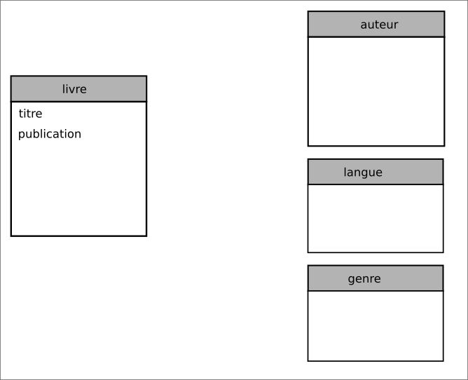

Les données en table#
Les données d’un tableau peuvent être stockées dans une table enregistrée dans un fichier. Avec un programme Python qui a accès au fichier, les données de la table sont mémorisées sous forme de liste ou de dictionnaire pour y être traitées.
On donne quelques éléments de vocabulaire concernant les tables:
un tuple ou enregistrement est composé de plusieurs informations distinctes appartenant à un même objet, entité ou élément. Pour faire simple, cela correspond à une ligne du tableau.
un attribut est une information élémentaire appartenant à un enregistrement. Là aussi, pour simplifier, les attributs correspondent aux intitulés des colonnes.
un attribut atomique est un attribut qui ne contient qu’une seule information.
chaque attribut possède un type que l’on retrouve en programmation: nombre entier ou flottant, chaine de caractères, booléen, etc.
le domaine d’un attribut donné correspond à un ensemble (fini ou infini) de valeurs admissibles.
On a répertorié dans une table les livres d’un amateur de romans.
Titre |
nom_auteur |
prénom_auteur |
naissance_auteur |
langue |
année_publication |
genre |
|---|---|---|---|---|---|---|
1984 |
Orwell |
George |
1903 |
anglais |
1949 |
[“totalitarisme”, “science-fiction”, “anticipation”, “dystopie”] |
Dune |
Herbert |
Frank |
1920 |
anglais |
1965 |
[“science-fiction”, “anticipation”] |
Fondation |
Asimov |
Isaac |
1920 |
anglais |
1951 |
[“science-fiction”, “économie”] |
Le meilleur des mondes |
Huxley |
Aldous |
1894 |
anglais |
1931 |
[“totalitarisme”, “science-fiction”, “dystopie”] |
Farenheit 451 |
Bradbury |
Ray |
1920 |
anglais |
1953 |
[“science-fiction”, “dystopie”] |
Ubik |
K Dick |
Philip |
1928 |
anglais |
1969 |
[“science-fiction”, “anticipation”] |
Chroniques martiennes |
Bradbury |
Ray |
1920 |
anglais |
1950 |
[“science-fiction”, “anticipation”] |
La nuit des temps |
Barjavel |
René |
1911 |
français |
1968 |
[“science-fiction”, “tragédie”] |
Blade runner |
K Dick |
Philip |
1928 |
anglais |
1968 |
[“intelligence artificielle”, “science-fiction”] |
Les robots |
Asimov |
Isaac |
1920 |
anglais |
1950 |
[“science-fiction”, “intelligence artificielle”] |
La planète des singes |
Boulle |
Pierre |
1912 |
français |
1963 |
[“science-fiction”, “dystopie”] |
Ravage |
Barjavel |
René |
1911 |
français |
1943 |
[“dystopie”, “uchronie”] |
Le monde des A |
Van Vogt |
Alfred Elton |
1912 |
anglais |
1945 |
[“science-fiction”, “intelligence artificielle”] |
La fin de l’éternité |
Asimov |
Isaac |
1920 |
anglais |
1955 |
[“science-fiction”, “voyage dans le temps”] |
De la terre à la lune |
Verne |
Jules |
1828 |
français |
1865 |
[“science-fiction”, “aventure”] |
La machine à explorer le temps |
Wells |
Herbert George |
1866 |
anglais |
1895 |
[“science-fiction”, “voyage dans le temps”] |
Traitement en Python#
On a rassemblé dans un fichier Python les romans de science-fiction. La table
de données est enregistrée dans la variable biblio. Pour traiter les données de cette table en Python, il est
nécessaire d’effectuer un import de celle-ci.
from bibliotheque import biblio
Quel est le type Python utilisé pour cette table ?
Quel est le type Python utilisé pour chaque enregistrement de la table ?
Comment sont représentés en Python les attributs de cette table ?
Écrire un script python qui affiche tous les titres de roman de cette table.
Écrire en Python, un script qui affiche les romans d’Isaac Asimov.
Écrire en Python, un script qui affiche tous les romans d’anticipation.
Le modèle relationnel#
Le regroupement dans une unique table de l’ensemble des enregistrements posent un certain nombres d’inconvénients pour le traitement des données :
la répétition de certaines informations (attribut auteur)
la multiplicité des valeurs pour l’attribut genre.
la recherche d’une information dans la table nécessite de parcourir toute la table pour obtenir, éventuellement, un ou plusieurs résultats.
les données de la table sont enregistrées dans un fichier. L’accès à ce fichier peut soulever de nombreux problèmes comme les accès concurrents (un seul utilisateur à la fois) et les droits d’accès au fichier en lecture et écriture.
comment garantir que l’ajout d’un enregistrement n’est pas un doublon d’un enregistrement existant!
la taille du fichier contenant la table à charger en mémoire.
Il existe un modèle de données qui palie à ces inconvénients: le modèle relationnel. Ce modèle repose sur une architecture client-serveur et sur des logiciels (SGBD) qui vont gérer les données imposant des règles exposées ci-après.
Le principe de base du modèle relationnel est le suivant :
séparer les données dans plusieurs tables appelées relations:
chaque relation contient des données relatives à un même sujet
chaque relation évite la redondance des données
dans une relation, chaque attribut ne contient qu’une seule information
joindre les relations entre elles par l’utilisation de clés:
des clés primaires qui sont des valeurs qui permettent d’identifier un enregistrement de manière unique
des clés étrangères qui référencent une clé primaire d’une autre relation
Quel est le nombre de relations à créer pour modéliser notre table ? Donner les attributs de chaque relation.
On représente ce modèle relationnel par le schéma suivant:
Compléter les relations avec leurs attributs respectifs.
Dans la relation livre, le titre peut-il constituer une clef primaire ? Et si on y ajoute l’année de publication ?
Si on identifie chaque titre par un nombre entier, cela peut-il être une clef primaire ? Si oui, à quelle condition ?
Dans la relation auteur, les attributs nom et prénom peuvent-ils constituer une clef primaire ? Justifier.
Compléter la relation langue en y ajoutant la clef primaire id_langue puis compléter la relation genre.
Il faut joindre les relations pour retrouver l’intégralité des informations sur chaque roman. Par exemple, pour connaitre la langue d’écriture d’un roman, il faut ajouter dans la relation livre la clef primaire de la relation langue. Ce nouvel attribut peut avoir le même nom que la clef primaire de la relation langue qui devient alors une clef étrangère de la relation livre.
On symbolise la jointure par une flèche reliant la relation livre vers la relation langue. Effectuer, sur le schéma relationnel, les jointures entre les différentes relations.
Quel est le problème rencontré pour joindre la relation livre avec la relation genre?
Pour remédier à la jointure entre les relations livre et genre, on crée une nouvelle relation livre_par_genre qui contient les clefs primaires des relations livre et genre.
Quelle est la clef primaire de cette relation ?
Compléter le schéma relationnel.
Construire et compléter les cinq relations avec les différents romans de la table initiale.
{kind=link}